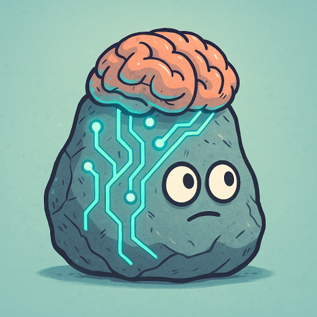
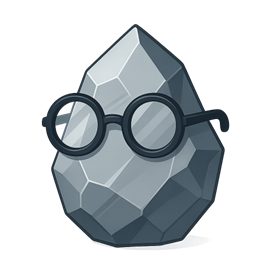
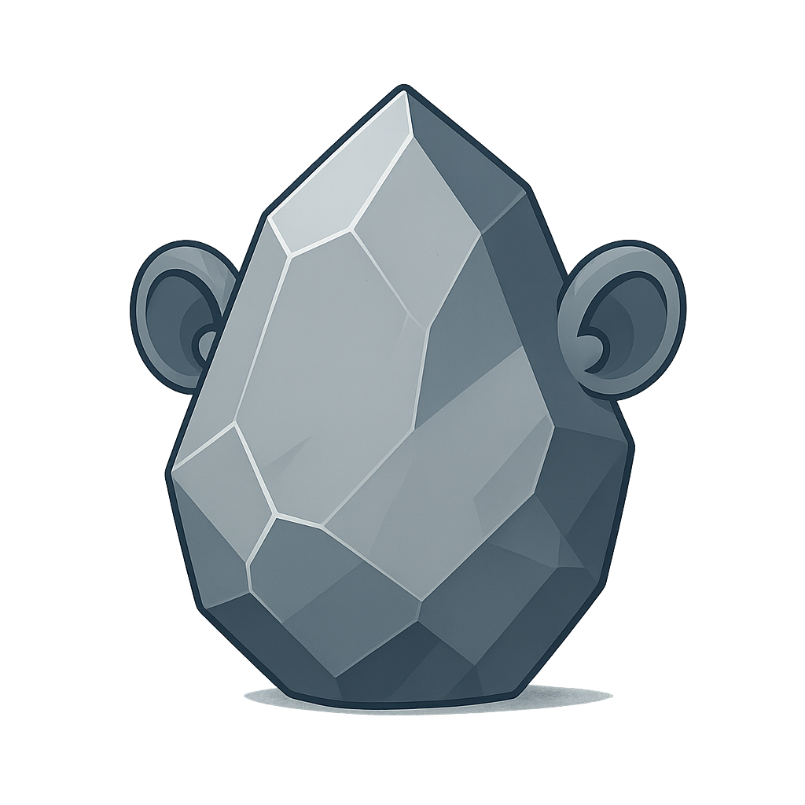

Использование ИИ в робототехнике
На данной странице вы можете найти информацию о том как использовать ИИ в том или ином виде в вашем проекте. Или же создать проект вокруг применения ИИ.
Искусственный интеллект — это когда мы взяли бездушный камень (кремний), прикрутили к нему куски меди, заставили складывать нули и единицы, а потом начали на полном серьёзе спрашивать у калькулятора совета по жизни.

Что даёт ИИ в проекте:
- уникальные свойства (зрение, слух и т.д.)
- плюс к престижу проекта
ИИ в проекте не является обязательным, оно:
- добавляет сложность
- делает проект дороже
- увеличивает время создания проекта
- требует хотя бы минимального знания python
- для тренеровки ИИ требуется мощное железо
Какие ИИ используют в проектах?
На практике в конкурсах встречаются:
- 95% — компьютерное зрение (CV)
- 4% — распознавание речи
- 1% — узкоспециализированный ИИ (ANI)
Компьютерное зрение - это область ИИ, где машины извлекают полезную информацию из изображений и видео и используют её для действий.
Вход: кадры камер, фото, глубина, LiDAR.
Вычисления: фильтры, признаки, сверточные сети, трансформеры, геометрия.
Выход: что и где на сцене, как это движется, как с этим взаимодействовать.

Совет
Простейший вариант использования компьютерного зрения - YOLO.
Распознавание речи — автоматический процесс преобразования речевого сигнала в цифровую информацию (например, текстовые данные).

Узкоспециализированный ИИ — это система, обученная выполнять одну чётко ограниченную задачу в одном домене и не переносить навыки за его пределы.
Специфика ИИ в робототехнике
- Работа в реальном времени. Важна скорость работы.
- Практическая реализация важнее теоретической части.
- Зависимость от железа. Часто требуется работа на слабом железе.
- Работа оффлайн. Работа со скаченными моделями приоритетнее работы по API.
Дополнительные материалы:
Подробный курс по нейронным сетям на английском языке в формате видео и в формате текста
Курсы на beyond curriculum
Курсы на stepik
Лекции по LLM Андрея Карпатого
Терминология:
ИИ-модель — это обученный набор параметров (весов) и описания структуры, который программа исполнения использует, чтобы по входным данным вычислять выход. Практически это один или несколько файлов.
Форматы и примеры файлов:
- PyTorch: .pt, .bin, .safetensors
- TensorFlow: SavedModel, .h5
- ONNX: .onnx
- Мобильные/встраиваемые: .tflite, CoreML
- LLM-инференс: .gguf, .ggml
Чатбот - диалоговый интерфейс поверх ИИ-модели. Реактивен: отвечает на сообщения. Обычно без внешних инструментов и долговременной памяти. Функция: «вопрос → ответ».
Ассистент - чатбот с оркестрацией. Имеет инструменты (функции/API/файлы), RAG-поиск по данным, настройку памяти. Выполняет команды и многошаговые задачи, но не ставит цели сам. Функция: «задача → план вызовов → результат».
Агент - автономная система с целью и циклом планирования. Сам формирует подзадачи, выбирает инструменты, действует, наблюдает результат и корректирует план. Может инициировать шаги без нового запроса, в пределах правил. Функция: «цель → план → действие → наблюдение → новая итерация».
Автор
По всем вопросам писать на aztechell@gmail.com или https://t.me/aztechell